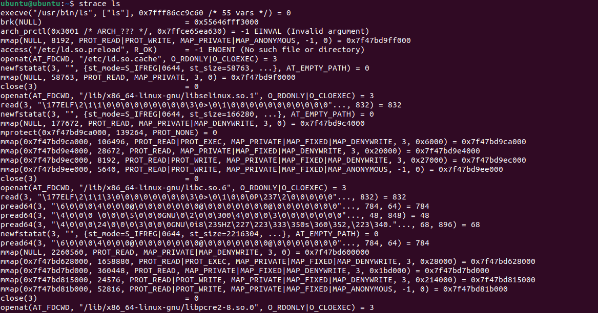
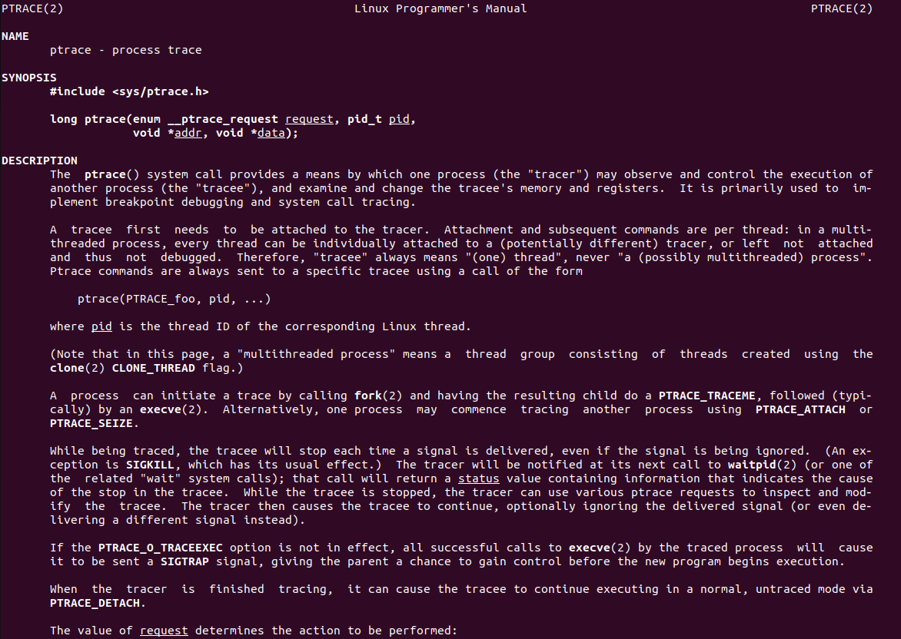

自作 strace
おすすめのガンプラ，随時募集しています
strace
seccomp がよく分からなかったので監視系で strace を作ってみる
strace はプロセスが使ってるシステムコールとかの呼び出しをトレースできる

strace は ptrace(2) でプロセスを監視しており，これによって呼び出されるシステムコールや その引数を見ている．

第一引数で ptrace リクエストの内容（？），第二引数にプロセスの pid を指定する．
long ptrace(enum __ptrace_request request, pid_t pid, void *addr, void *data);
他プロセスをトレースするためには，対象のプロセスにアタッチし，一時的に親になる必要がある． ptrace が実行されると，トレーサーは，システムコールを呼び出したタイミングなどで 子プロセスに停止するよう命令し，カーネルは子プロセスを SIGTRAP で停止する．
strace を作る
まずはアタッチ・デタッチの動きをみるだけ
int main(int argc, char *argv[]){
if(argc < 2){
fprintf(stderr, "pid needs\n");
exit(1);
}
pid_t pid = atoi(argv[1]);
printf("attach to PID: %d\n", pid);
long ret = ptrace(PTRACE_ATTACH, pid, NULL, NULL);
if(ret<0){
perror("atttach failed");
exit(1);
}
printf("attached to %d\n", pid);
sleep(5);
ret = ptrace(PTRACE_DETACH, pid, NULL, NULL);
if(ret<0){
perror("failed to detach");
exit(1);
}
printf("detached from %d\n", pid);
return 0;
}
この状態で top コマンドを打ち，動きを見てみると sleep(5) の間，top コマンドの動きが止まっていることが分かる． これはさっき書いた「カーネルは子プロセスを SIGTRAP で停止する」の部分． ptrace されるプロセスは，シグナルごとにいちいち停止するので，waitpid で状態を確認する必要があるらしい．
waitpid(pid_t pid, int *wstatus, int options)
pid 引数で指定した子プロセスの状態変化が起こるまで呼び出し元のプロセスを一時停止する．
- WIFEXITED: 子プロセスが正常に終了した場合に真
- WIFSIGNALED: 子プロセスがシグナルにより終了した場合真
- WTERMSIG: 子プロセス終了の原因になったシグナル番号を返す
- WIFSTOPPED: 子プロセスがシグナルにより停止した場合に真
- WSTOPSIG: 子プロセスを停止させたシグナル番号を返す
なので，アタッチした後は以下の手順
- waitpid() で状態変化を監視する
- 正常終了していたら break, 停止 or 終了していたらその旨を出力
- PTRACE_SYSCALL で再開する
while(1){
waitpid(pid, &status, 0);
if(WIFSTOPPED(status)){
printf("stopped: signal %d\n",WSTOPSIG(status));
} else if (WIFSIGNALED(status)){
printf("terminated: signal %d\n",WTERMSIG(status));
} else if (WIFEXITED(status)){
break;
}
ptrace(PTRACE_SYSCALL, pid, NULL, NULL);
}
ここで，stop したときに，プロセスが呼ぶシステムコールを知りたいので，以下のように実装する. レジスタの rax を見るようにする
if(WIFSTOPPED(status)){
ptrace(PTRACE_GETREGS, pid, NULL, ®);
printf("SYSTEMCALL: %lld\n", reg.orig_rax);
//printf("stopped: signal %d\n",WSTOPSIG(status));
} else if (WIFSIGNALED(status)){
printf("terminated: signal %d\n",WTERMSIG(status));
} else if (WIFEXITED(status)){
break;
}
最後に，https://blog.ssrf.in/post/follow-system-call-with-ptrace/ からもらってきた システムコールの番号との対応をコピーして実装する
printf("SYSTEMCALL: %s\n", syscalltable[reg.orig_rax]);
){kind=link}